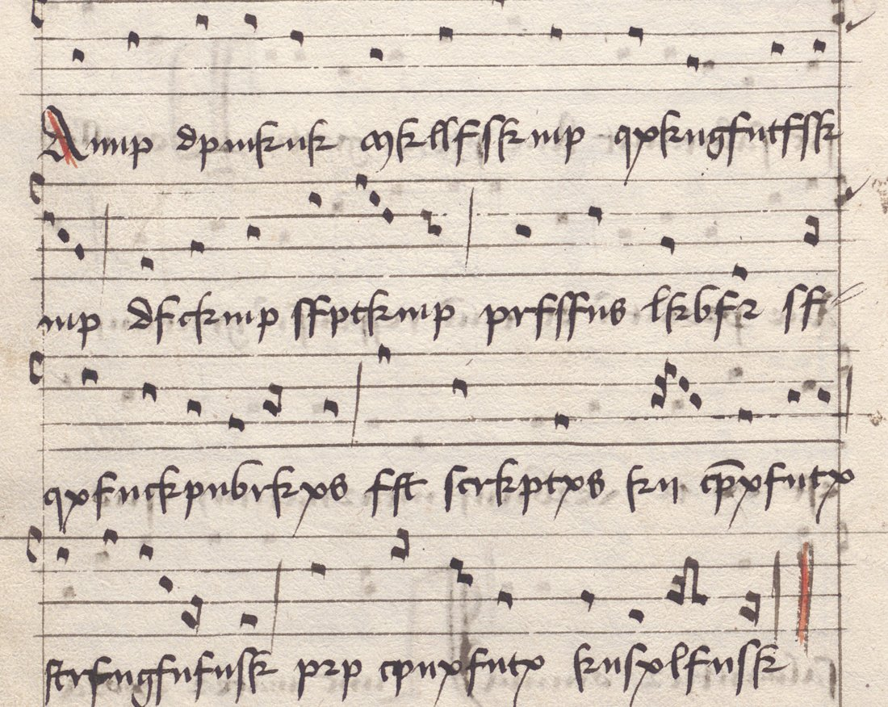
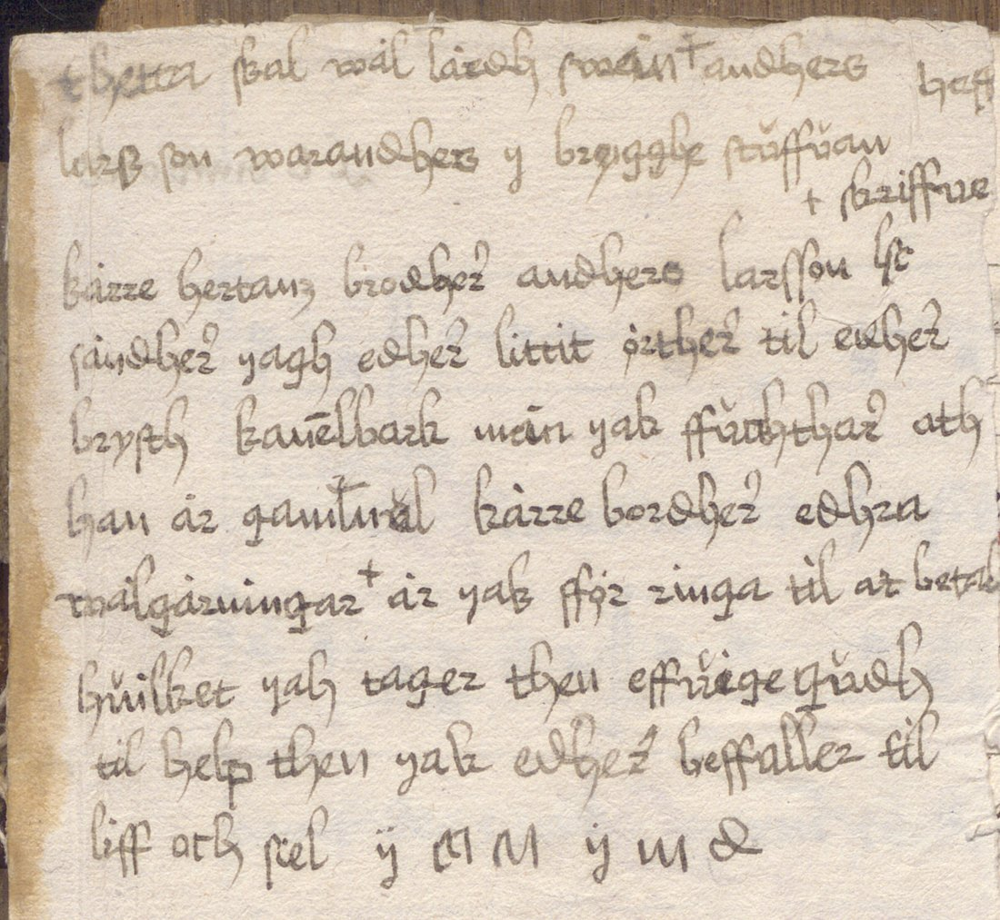
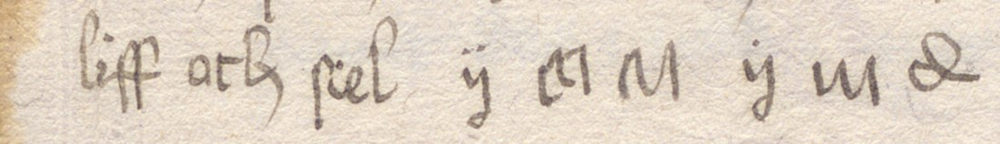

At a glanceKnown key applied · partial (95% of the cipher)
- The document
- Uppsala UB C 513, a Dominican sequentiary, has two ciphered pieces: a scribe’s dating colophon on f. 19v and a six-sign signature on a pasted slip on f. 1r.
- Where
- Uppsala University Library, C 513; DECODE R4349 (catalogue entry 235), which has one placeholder image and a note about “a short ciphertext of six symbols”.
- The cipher
- In the colophon every vowel is written as the next letter of the alphabet (a→b, e→f, i→k, o→p, u→x); consonants stand for themselves.
- How it was read
- The rule and decipherment come from the 1992 catalogue of the Uppsala C collection. The folio was found in the Alvin scans, transcribed letter by letter (125 letters) and decoded word for word.
- What it says
- The book was written in 1517 in the Strängnäs convent for the convent of Västerås. The slip is an Old Swedish note sending herbs and cinnamon bark to Anders Larsson.
- Still open
- The six signs ending the f. 1r note are not deciphered: the colophon rule does not fit them and six signs cannot fix a key. 125 of 131 cipher tokens are decoded.
- Credit
- Andersson-Schmitt, Hallberg and Hedlund (1992) gave the rule and the decipherment.
01 The colophon on f. 19v

C 513 is a sequentiary of 84 paper leaves in one early-16th-century cursive hand. The owner’s entry on the front pastedown reads Liber conuentus insulensis ordinis predicatorum. f. 19v closes the sequence Benedicta sit celorum regina with “…in celesti patria Amen”. The scribe then carried on in the same hand, on four more text lines under notation, in what looks like a garbled language. A red catchword Corda manibus, the incipit of the next sequence, closes the page.
Annp dpmknk mkllfskmp qxkngfntfsk- mp dfckmp sfptkmp prfsfns lkbfr sf- qxfnckpnbrkxs fst scrkptxs kn cpnxfntx strfngfnfnsk prp cpnxfntx knsxlfnsk
The rule is the old scribal trick of writing each vowel as the next letter of the alphabet (i and j, u and v counting as one letter each):
| plain | a | e | i | o | u |
|---|---|---|---|---|---|
| written | b | f | k | p | x |
Consonants stand for themselves, and word division and doubled letters are kept. The rubricated capital A of Anno is left plain. Because b and p are also ordinary consonants of the text, the written b in lkbfr is a real b (liber) and the written p in scrkptxs, prfsfns and prp is a real p (scriptus, presens, pro). Everywhere else they stand for a and o. Context always decides, and no word stays ambiguous.
02 The decoded colophon
Anno domini millesimo quingentesimo decimo septimo presens liber sequencionarius est scriptus in conuentu strengenensi pro conuentu insulensi.
“In the year of the Lord 1517 this sequentiary was written in the convent of Strängnäs for the convent of Västerås.” Insulensis is the Dominican house of Västerås, the owner named on the pastedown. The catalogue adds a small irony. A later reader at Västerås, who evidently could not read the ciphered date, wrote on f. 20v that the book was the work of Frater Gudmundus Benedicti “circa annum 1520”.
03 The note on f. 1r and its six signs
The slip is a second, unrelated cipher in a later hand, so its result is given apart from the colophon’s: the colophon 125 of 125 letters read with its known key, the slip 0 of 6 signs, not solved.

The catalogue notes only that a slip with a post-medieval Swedish text is pasted on f. 1r, and that “an Anders Larsson receives medicines”. Transcribed from the scan (uncertain words marked ?):
thetta skal wal[?] larens? andhers hess? lass son wara andhers y brygghe stuffuan … kære hertans brodher andhers larsson h[elsa]? sändher yagh edher littit örther til edher brysth kanelbark men yak ffruchthar ath han är gammal kære brodher edhra [w]älgärningar? är yak ffor ringa til at betala hwilket yak tager then effuige gudh til help then yak edher beffaller til liff oth sel ÿ ɑ M ÿ u ꝺ
“…to Anders Larsson in the brewhouse. Dear brother Anders Larsson, I send you a few herbs for your chest, cinnamon bark, but I fear it is old. Dear brother, I am too poor to repay your kindnesses, which I leave to the eternal God, to whom I commend you in life and soul.” Then come the six signs, where the writer’s name would stand. The clear text of the slip, with its uncertain words counted as holes, reads at 94.8% of its words, under the 95% a complete reading needs.

The signs look like cursive letters of the same hand: ÿ as in yagh, and ꝺ the hand’s looped d, as in edher. They fall into two groups of three, each opening with ÿ, as a first name and a patronymic would. The colophon’s vowel shift does not apply, since none of b, f, k, p or x occurs. None of the 23 shifts of the alphabet on five readings of the signs gives a name or a formula, and nothing else in the book is in this hand. Six signs with one repeat cannot fix a substitution. They are not deciphered.
04 Method
The DECODE record’s only image is a placeholder icon. Its attached PDF is the catalogue entry, which named the folio and the rule. A first pass took DECODE’s “six symbols” to be a garbled description of the colophon. All 175 Alvin images were then checked, and the slip on f. 1r turned up. The only other extra writing is clear pen trials on the back pastedown. Alvin’s scans of C 513 are public domain. f. 19v is attachment 42, and its full TIFF was cut into line crops and transcribed. The inverse rule was applied by a small script. It takes k as i and x as u (neither is a consonant in this text) and chooses a or b, e or f, and o or p by scoring the candidate words across the whole colophon with the project’s Latin n-gram model. A first pass word by word, with no context, took prp for oro. With the sentence as context, it chose pro, and the output matched the catalogue’s reading in every word.
05 What stays open or uncertain
- The six signs closing the f. 1r note (ÿ ɑ M ÿ u ꝺ) are not deciphered. Too short, with no key and no sibling in the same hand. Probably the writer’s name.
- The colophon: all 125 cipher letters have a value, and all 19 words give sense (grade H).
- The note’s clear Swedish is a first transcription from the scan; the words of its first line are uncertain.
- In the transcription, the minims after the initial A could be read m or nn. The rule requires nn (Annp), as the catalogue has it. In the first cpnxfntx the n is carried by a stroke over cp.
- The catalogue cites earlier literature on the book: Collijn (1917), Moberg (1927) and Hedlund’s plate of 1977. Whether any of these printed the decipherment before 1992 was not checked.
Full texts
The transcription and the decryption of every document on this page, so that the reading can be used and checked. Short files are shown here; all are in the repository.
Colophon of the Strängnäs Sequentiarium, 1517, Uppsala UB C 513 f. 19v
The scribe's dated colophon in a vowel-shift cipher set under chant notation: 'In the year of the Lord 1517 the present sequentiary was written in the convent of Strängnäs for the convent of Västerås' (insulensis = the Dominican house of Västerås). The rule and reading were already printed in the Uppsala manuscript catalogue (1992); read here in full and checked.
Transcription
Annp dpmknk mkllfskmp qxkngfntfsk- mp dfckmp sfptkmp prfsfns lkbfr sf- qxfnckpnbrkxs fst scrkptxs kn cpnxfntx strfngfnfnsk prp cpnxfntx knsxlfnsk
Decryption
annp -> anno (next annp, margin 0.220/char) dpmknk -> domini (next dpmini, margin 0.261/char) mkllfskmp -> millesimo (next millesimp, margin 0.084/char) qxkngfntfskmp -> quingentesimo (next quingentesimp, margin 0.081/char) dfckmp -> decimo (next decimp, margin 0.118/char) sfptkmp -> septimo (next septimp, margin 0.137/char) prfsfns -> presens (next oresens, margin 0.074/char) lkbfr -> liber (next liaer, margin 0.147/char) sfqxfnckpnbrkxs -> sequencionarius (next sequencionbrius, margin 0.145/char) fst -> est (next fst, margin 0.231/char) scrkptxs -> scriptus (next scriotus, margin 0.138/char) kn -> in cpnxfntx -> conuentu (next cpnuentu, margin 0.234/char) strfngfnfnsk -> strengenensi (next strengfnensi, margin 0.161/char) prp -> pro (next oro, margin 0.082/char) cpnxfntx -> conuentu (next cpnuentu, margin 0.223/char) knsxlfnsk -> insulensi (next insulfnsi, margin 0.165/char) anno domini millesimo quingentesimo decimo septimo presens liber sequencionarius est scriptus in conuentu strengenensi pro conuentu insulensi
Reading
# R4349, Uppsala UB C 513 f. 19v, the 1517 colophon of the Strängnäs Sequentiarium: the reading Written 23 Oct 2026 (verification 3): the last line of `reading.txt` (the vowel-shift decode, every word checked against its runner-up), with capitals and punctuation added. The reading was printed in the Uppsala C-collection catalogue (1992) and matches word for word. ## Reading Anno domini millesimo quingentesimo decimo septimo presens liber sequencionarius est scriptus in conuentu strengenensi pro conuentu insulensi.
Translation
<!-- English translation of colophon_reading.md (Claude Opus 5.5, 23 Oct 2026): the reading of the vowel-shift cipher colophon of Uppsala UB C 513 f. 19v, which matches the Uppsala C-collection catalogue (1992) word for word. --> # R4349, the 1517 colophon of the Strängnäs Sequentiarium (Uppsala UB C 513 f. 19v): English translation In the year of the Lord one thousand five hundred and seventeen, the present book of sequences was written in the convent of Strängnäs for the convent of the island (Västerås).
Slip pasted on f. 1r: Old Swedish letter ending in six signs (not read) read in part
A short private letter in Old Swedish to Anders Larsson, sending a little cinnamon bark for his chest, closing 'til liff oth sel' and then six cipher signs, probably a concealed signature. The six signs are not read (too short, no key, no sibling); the decryption file is the transcription of the clear letter with the signs as written.
Builds coherent sentences, but under the read bar of 95% of words read as sense (95% here); the holes are marked in the reading.
Decryption
[Uppsala UB C 513, slip pasted on f. 1r (Alvin attachment 3). Old Swedish, post-medieval hand. ? = uncertain word; the six signs at the end are the cipher.] thetta skal wal[?] larens?+ andhers hess? lass son wara andhers y brygghe stuffuan [+ skriffue, interlined] kære hertans brodher andhers larsson h[elsa]? sändher yagh edher littit örther til edher brysth kanelbark men yak ffruchthar ath han är gammal kære brodher edhra [w]älgärningar? är yak ffor ringa til at betala hwilket yak tager then effuige gudh til help then yak edher beffaller til liff oth sel ÿ ɑ M ÿ u ꝺ
Translation
<!-- English translation of slip.txt (Claude Opus 5.5, 23 Oct 2026): the slip pasted on f. 1r of Uppsala UB C 513, a short private letter in Old Swedish, clear text, ending in six cipher signs that are not read (kept as signs). Uncertain words of the transcription kept as [?word]; the address lines are partly uncertain. --> # R4349 slip, Uppsala UB C 513 f. 1r: a letter to Anders Larsson, English translation This shall [?well] [?Larens] Anders [?hess] [?Lasson] be [written / sent to] Anders in the brew-house. Dear brother of my heart, Anders Larsson, [?greetings]. I send you a few herbs for your chest, cinnamon bark, but I fear that it is old. Dear brother, I am too humble to repay your [?kindnesses], for which I take the eternal God to help, to whom I commend you in body and soul. ÿ ɑ M ÿ u ꝺ
06 Sources
- Uppsala University Library, C 513, Alvin record 193385; f. 19v is attachment 42, f. 1r with the slip attachment 3.
- DECODE R4349 (placeholder image; catalogue pages as PDF).
- M. Andersson-Schmitt, H. Hallberg, M. Hedlund, Mittelalterliche Handschriften der Universitätsbibliothek Uppsala. Katalog über die C-Sammlung, Bd. 5: Handschriften C 401–550 (Stockholm 1992), pp. 275–276, C 513.
Notes, transcription, decoder and profile: targets/r4349/ in the repository.